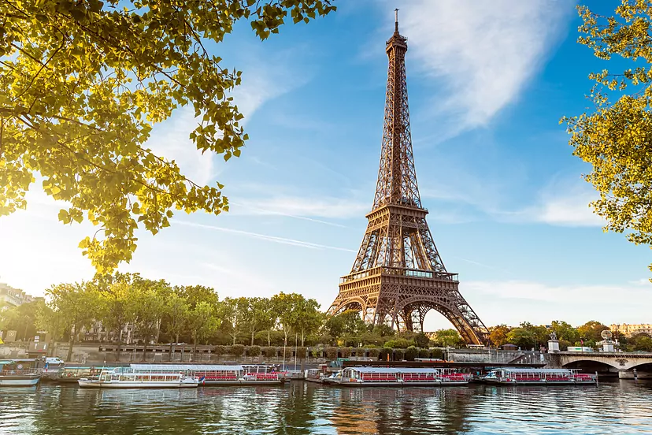

Galería de fotos


Mapa de la ciudad
París (en francés: Paris pronunciado /paʁi/) es la capital de Francia y su ciudad más poblada. Capital de la región de Isla de Francia (o «Región Parisina»), constituye el único departamento unicomunal del país.
Establecida en el centro de la cuenca de París, en un bucle del Sena, entre las confluencias con el Marne y el Oise. Fue ocupada desde el siglo iii a. C. por el pueblo galo de los Parisii, en el sitio original de Lutecia, del cual toma el nombre de París alrededor del año 310, para irse extendiendo en su área circundante. Capital del reino de los francos durante el reinado de Clodoveo I, París se convirtió en una de las principales ciudades de Francia durante el siglo x, con palacios reales, ricas abadías y una catedral.
Durante el siglo xii, con la Universidad de París, la ciudad se convirtió en uno de los primeros centros de Europa para la educación y las artes. Fijado el poder real en esta ciudad, su importancia económica y política no dejó de crecer. Así, a principios del siglo xiv, París era una de las ciudades más importantes del mundo cristiano. Desde el siglo xvi, fue la metrópolis del imperio colonial francés hasta el siglo xx.
Los siglos xvii y xviii fue la capital de la principal potencia mundial. En el siglo xix, fue la capital primero del Imperio Napoleónico y luego de las artes y los placeres. En los siglos xx y xxi, es una de las principales ciudades de la Unión Europea. Desde la Edad Media, ha ocupado así un papel principal en el mundo a través de su actividad y su influencia.
La ciudad de París tiene una población de aproximadamente 2,2 millones de habitantes en 2023. Sin embargo, en el siglo xx, el área metropolitana de París se expandió más allá de los límites del municipio de París, y es hoy en día, con una población de 14 684 473 habitantes en 2022, el área metropolitana más poblada del continente europeo7 y la 28.ª del mundo. La región de París es junto con la de Londres, uno de los núcleos económicos más importantes de Europa. Con 607 000 millones de euros (845 000 millones de dólares), produjo más de una cuarta parte del producto interior bruto (PIB) de Francia en 2011. La Défense es el principal barrio de negocios de Europa, alberga la sede social de casi la mitad de las grandes empresas francesas, así como la sede de veinte de las cien más grandes del mundo.
Lugares de interés
Torre Eiffel
La torre Eiffel (tour Eiffel, en francés), inicialmente llamada Tour de 300 mètres («Torre de 300 metros») es una estructura de hierro pudelado diseñada inicialmente por los ingenieros civiles Maurice Koechlin y Émile Nouguier y construida, tras el rediseño estético de Stephen Sauvestre, por el ingeniero civil francés Gustave Eiffel y sus colaboradores para la Exposición Universal de 1889 en París (Francia).
Ubicada en el extremo del Campo de Marte a la orilla del río Sena, este monumento parisino, símbolo de Francia y de su capital, es la estructura más alta de la ciudad y el monumento turístico más visitado del mundo, con 7,1 millones de turistas cada año. Con una altura de 300 metros, prolongada más tarde con una antena hasta los 324 metros, la torre Eiffel fue la estructura más elevada del mundo durante cuarenta y un años. Es el monumento de pago más visitado del mundo.
Museo del Louvre
El museo del Louvre (pronuciación en español /lubre/ o /luv/; en francés musée du Louvre /myze dy luvʁ/) es el museo nacional de Francia consagrado tanto a las bellas artes como a la arqueología y las artes decorativas anteriores al impresionismo. Está ubicado en París, la capital del país, en el antiguo palacio real del Louvre. Sus extensas colecciones son el resultado del coleccionismo desarrollado por la monarquía francesa a lo largo de varios siglos, al que se sumó el esfuerzo de varias personalidades de la Ilustración, la labor desamortizadora de la Revolución francesa, las victorias militares durante las guerras napoleónicas, y las campañas arqueológicas y compras impulsadas durante el siglo XIX. En sus 210 000 m² se exponen unas 487 000 obras, de las cuales 7000 son pinturas, y unos 380 000 objetos y antigüedades.
Arco del Triunfo

El Arco de Triunfo de París (en francés: Arc de Triomphe o Arc de Triomphe de l'Étoile) es uno de los monumentos más famosos de la capital francesa y probablemente se trate del arco de triunfo más célebre del mundo. Construido entre 1806 y 1836 por orden de Napoleón Bonaparte para conmemorar la victoria en la batalla de Austerlitz, está situado en el VIII Distrito de París, sobre la plaza Charles de Gaulle, antiguamente denominada plaza de la Estrella (en francés: Place de l’Étoile), en el extremo occidental de la avenida de los Campos Elíseos, a 2,2 km de la plaza de la Concordia, ubicada en el extremo oriental de dicha avenida. Tiene una altura de 50 m, un ancho de 45 m y una profundidad de 22 m. La bóveda grande mide 29,19 m de alto por 14,62 m de ancho, mientras que la pequeña mide 18,68 m de alto por 8,44 m de ancho. Es gestionado por el Centro de los monumentos nacionales.
Catedral de Notedame
La catedral de Notre Dame (en francés: Cathédrale Notre-Dame, lit. Catedral de Nuestra Señora) es una catedral de culto católico, sede de la archidiócesis de París, la capital de Francia. Dedicada a la Virgen María, madre de Jesucristo, se sitúa en la pequeña isla de la Cité, rodeada por las aguas del río Sena. Es uno de los monumentos más populares de la capital francesa.
Se trata de uno de los edificios más señeros y antiguos de cuantos se construyeron en estilo gótico. El uso innovador de la bóveda de crucería y del arbotante, los enormes y coloridos rosetones y el naturalismo y la abundancia de decoración escultórica lo diferencian de la arquitectura románica.
Panteón
El Panteón (en francés: le Panthéon) de París es un monumento de estilo neoclásico situado en el V distrito de París. Erigido en el corazón del Barrio Latino, en la montaña Santa Genoveva, está en el centro de la plaza del Panteón y rodeado por el ayuntamiento del V distrito, el Henri-IV, la iglesia Saint Étienne du Mont, la biblioteca de Santa Genoveva, la Universidad de París I (Panthéon-Sorbonne) y la Universidad de París II (Panthéon-Assas). La calle Soufflot le dibuja una perspectiva hasta el jardín de Luxemburgo.
El nombre del monumento, Panteón, proviene de pántheion (en griego: πάνθειον), que significa «de todos los dioses». Inicialmente previsto en el siglo XVIII para ser una iglesia que albergaría el relicario de santa Genoveva, este monumento está destinado a honrar a los grandes personajes que han marcado la historia de Francia a excepción de las carreras militares normalmente honradas en el Panteón militar de los Inválidos.
Palacio de Chaillot
El Palacio de Chaillot (del francés: Palais de Chaillot) de París está situado en el distrito XVI, en la plaza del Trocadéro, en la colina de Chaillot. Se construyó para la Exposición Universal de 1937 por los arquitectos Léon Azéma, Jacques Carlu y Louis-Hippolyte Boileau, en lugar de la plaza del antiguo Palacio del Trocadero. Se encuentra en la ribera derecha del Sena, frente a la Torre Eiffel.
El palacio consta de dos pabellones de estilo neoclásico con dos alas curvilíneas de 195 m que bajan hacia el Sena. Están separados por una explanada que da a los jardines del Trocadéro. En una superficie de 55.000 m² el edificio aloja tres grandes museos el Museo de la Marina, el Museo del Hombre y el Museo de la Arquitectura (Cité de l'architecture) y el Teatro Nacional de Chaillot.
En el palacio la Asamblea General de las Naciones Unidas adoptó la Declaración Universal de los Derechos Humanos el 10 de diciembre de 1948. Por ello, a iniciativa del entonces presidente de la República François Mitterand, la explanada central del palacio recibió en 1985 el nombre de Parvis (plaza) de las Libertades y de los Derechos del Hombre.
Noticias
Crisis de agricultores
En el mayor mercado de frescos, bajo 'amenaza' de bloqueo: "Hay menos actividad, hay clientes que tienen miedo"
El primer ministro francés anuncia hoy nuevas medidas para calmar a los agricultores, mientras que los tractores del sur de Francia avanzan hacia París para alcanzar el mercado mayorista
Actualidad económina
El Gobierno francés señala la competencia desleal de países como España o Italia en la crisis de los agricultores franceses
El ministerio del Interior moviliza 15.000 agentes para impedir el bloqueo de París este lunes que auguran "negro"